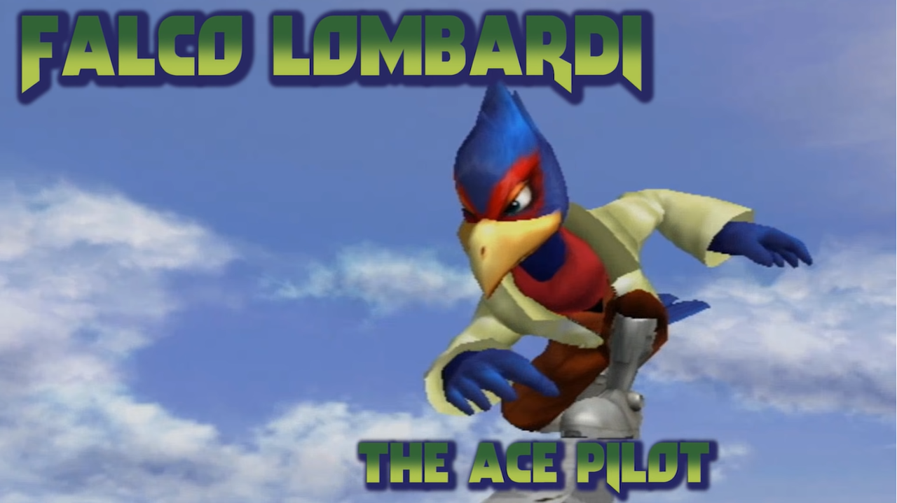

Falco Lombardi, le pilote étoile de l'équipe Star Fox est un ami proche et rival de Fox. Dans SSBM, Falco peut sembler similaire a fox au premier regard, mais les deux ont un style tres différent et leurs attributs distinct fonts en sorte que les deux personnages sont joué de maniere tres différente, Falco est un personnages axée sur le controle du stage et du tempo de la partie.

Falco ne possede pas la vitesse extreme de fox, mais il possede le saut le plus haut de tout les personnages, cela lui permet de cottroller le stage au complet avec son meilleur attout, son blaser. Étant le meilleur projectile du jeu, le blaster de falco lui permet de completement empecher l'adversaire de bouger et d'avoir le controlle total du terrain. Falco possede aussi des attaques plus longues que Fox qui lui donne l'avantage de pouvoir attaquer l'adversaire tout en restant relativement en sécurité. le plus gros désavantage de Falco est qu'il est le personnage le plus susceptible a se faire combo d'une maniere brutale et perdre une vie tres rapidemment.